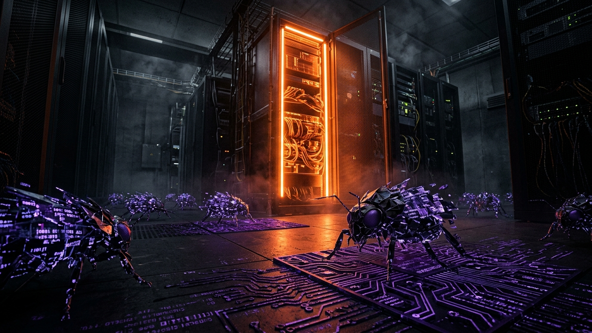

Alright, let's cut the crap. You've seen the ads. Every security vendor on the planet is slapping an "AI-Powered" or "Next-Gen" label on their product. It sounds impressive, like you're buying a piece of the future to protect your network. As someone who has been in the trenches for 15 years, cleaning up the messes left by so-called "unbeatable" software, I'm here to give you the ground truth. We're going to pull back the marketing curtain and talk about what this "AI" stuff actually is, where it absolutely crushes the old way of doing things, and where it can fail spectacularly.
Forget the buzzwords. The core question is simple: When a brand-new, never-before-seen piece of ransomware cooked up in 2026 hits your system, will this AI software be your hero or just another expensive line item in your budget that failed? The answer isn't a simple yes or no. It's about understanding the technology, its limits, and how it fits into a real-world defense strategy. This is the no-BS guide I wish I had five years ago.
First, let's get one thing straight. When we say "AI" in cybersecurity, we're not talking about a self-aware computer genius from a sci-fi movie. What we're really talking about is Machine Learning (ML). Think of it less like a conscious brain and more like a highly trained police dog. You can't have a conversation with it, but you can train it to sniff out things that are wrong based on patterns it has learned from millions of examples.
The old way of doing antivirus was like having a bouncer at a nightclub with a photo album of known troublemakers. This is called signature-based detection. If someone walks up and their face matches a photo in the album, they get thrown out. But if a new troublemaker shows up, one who isn't in the album yet, they walk right in. This is why traditional AV is useless against "zero-day" attacks—brand new threats for which no signature exists yet.
AI Anti-Virus, or more accurately, an Endpoint Detection and Response (EDR) tool with an ML engine, is a completely different beast. This is like having an experienced, street-smart bouncer who doesn't need a photo album. Instead, this bouncer watches for suspicious behavior. They don't care what you look like; they care what you're doing. Are you trying to sneak in the back window? Are you hiding a weapon under your coat? Are you suddenly trying to light the curtains on fire? In computer terms, the AI is watching for processes that are behaving abnormally. For example, it sees Microsoft Word suddenly trying to run PowerShell commands to download a file from a weird Russian website. That's not normal behavior for a word processor. The AI flags this, isolates the process, and kills it before it can do any real damage. It stops the attack based on the action, not the identity of the file.
This model is trained on colossal datasets containing billions of examples of both "good" and "bad" file behaviors. It learns what normal looks like on your network, so it can instantly spot what's out of place. It's a proactive, predictive model, not a reactive, list-checking one. This fundamental shift from "what it is" to "what it does" is the single biggest leap forward in endpoint security in the last two decades.
For years, the anti-virus industry ran on a simple, predictable cycle. A new virus would be released into the wild. Security companies would scramble to get a sample, analyze it, create a signature (a unique digital fingerprint or "hash"), and push that signature out to their customers' AV software in a definition update. This worked fine when there were a few hundred new viruses a month. Today, we see hundreds of thousands of new malware variants *every single day*. The signature-based model has completely collapsed under this volume.
Modern attackers treat signatures as a joke. They use automated tools to create polymorphic malware. This is malware that changes its own code every time it infects a new machine. It’s like a burglar who wears a different mask and costume for every house they rob. The underlying goal is the same, but the signature—the digital fingerprint—is unique every time, making it invisible to traditional AV. A hacker can take a known piece of ransomware, run it through a simple tool that slightly alters its code, and poof—it’s a "zero-day" threat that will sail past 99% of signature-based defenses.
Even worse is the rise of fileless malware. This is the stuff of nightmares for old-school AV because it never writes a malicious file to the hard drive to be scanned. Instead, it lives in the computer's memory (RAM) or hijacks legitimate system tools like PowerShell or Windows Management Instrumentation (WMI). It's a ghost in the machine. Since there's no "file" to scan, a signature-based AV is completely blind. It's like trying to catch a phantom with a butterfly net. The attack happens, your data gets stolen or encrypted, and your legacy AV software sits there, blissfully unaware, reporting "No threats found." It's not just ineffective; it's providing a dangerous false sense of security.
💡 Expert IT Tip: Want to see this in action? Take a non-critical (or virtual) machine and find a benign script online, like a simple PowerShell tool from GitHub. Now, upload it to a site like VirusTotal.com. It will scan the file against 70+ AV engines. See the results. Now, change a single comment line inside the script and re-upload it. The file's hash has changed, and you may see a different set of detection results, demonstrating how trivial it is to alter a file's signature and evade detection from some engines. This is the game hackers play all day, every day.
This is where we get to the good part. If signature-based detection is a history book, AI-based detection is a crystal ball. Its primary strength is in identifying and stopping threats that it has never seen before. The most potent example of this is its effectiveness against ransomware. Modern ransomware doesn't need to be on a "known bad" list for an AI engine to nuke it from orbit. The AI's behavioral model is trained to recognize the *process* of a ransomware attack.
Think about what ransomware does: a single process suddenly starts opening, reading, and writing to thousands of files in rapid succession, often changing their file extensions (e.g., from .docx to .docx.LOCKED). This is wildly abnormal behavior for any legitimate program. An AI-powered EDR sees this flurry of file encryption activity, recognizes it as a hostile pattern, and immediately kills the offending process and quarantines the executable. It can even automatically roll back the few files that were encrypted before it intervened, effectively erasing the attack. It didn't need a signature; it just needed to see the behavior. This is why good AI/EDR solutions are the single most effective defense against ransomware today.
Humanize your text and bypass any AI detector instantly with Undetectable AI.
BYPASS AI DETECTION NOWAnother area where AI excels is with those pesky fileless attacks. Since the AI is watching system behavior, not just scanning files, it can spot a legitimate tool being used for malicious purposes. For instance, it monitors PowerShell.exe. If a user opens a phishing email and a macro in a Word document executes a PowerShell command to connect to a command-and-control server, the AI sees it. It knows that while PowerShell is a valid tool, it's highly unusual for Microsoft Word to launch it and have it make a suspicious outbound network connection. That context is key. The AI connects the dots—Word spawns PowerShell, PowerShell makes a weird connection—and shuts the entire process chain down. A signature-based scanner would see nothing wrong because both Word and PowerShell are trusted programs.
This same logic applies to zero-day exploits. An attacker might use a brand-new, unpatched vulnerability in Adobe Reader to gain a foothold. The AI may not know about the specific vulnerability, but it will see what happens *after* the exploit: Adobe Reader suddenly spawning a command prompt or trying to write a new file to a system directory. That's the malicious behavior it's trained to stop. It might not prevent the initial exploit, but it prevents the payload—the ransomware or spyware—from ever running. It's the difference between a burglar picking your lock and a burglar picking your lock but getting tackled the second they step inside.
Now for the dose of reality. AI is powerful, but it's not infallible. The smartest attackers on the planet aren't trying to fight the AI head-on; they're learning how to fool it, bypass it, or slide right under its radar. The arms race has simply evolved. Instead of creating malware that avoids a signature, they're now creating malware that mimics benign behavior to avoid triggering the AI's detection models.
One of the biggest challenges is a technique called Living Off The Land (LotL). This is where attackers exclusively use legitimate, pre-installed tools on the victim's machine to carry out their attack. They use PowerShell for scripting, WMI for persistence, and Bitsadmin (a Windows file transfer utility) to download their tools. From the AI's perspective, this can look like a regular system administrator doing their job. Differentiating between a malicious admin and a real admin is incredibly difficult. It requires very careful tuning and often a human analyst to review the alerts. A stealthy attacker using only LotL techniques can often operate for weeks or months before being discovered.
Another emerging threat is Adversarial AI. Hackers are now building their own machine learning models. They can take a piece of malware and test it against a simulated AI defender thousands of times, slightly tweaking it with each run until they find a version that the AI model classifies as "benign." They are essentially using AI to find the blind spots in the defensive AI. This is a cat-and-mouse game being played at machine speed, and it's getting more sophisticated every year.
Finally, there's the problem of "slow-and-low" attacks. AI models are great at detecting fast, noisy events like a ransomware explosion. They are less effective against a patient, human-operated attack where the intruder moves very slowly. They might compromise one account, wait a week, escalate privileges, wait another week, and slowly exfiltrate a few files at a time. Each individual action is so small that it doesn't cross the threshold to trigger a high-priority alert. It gets lost in the noise of everyday network traffic. This is where the "R" in EDR—Response—becomes critical, relying on human threat hunters to connect these low-confidence events over time to spot the bigger picture.
💡 Expert IT Tip: The biggest operational headache with AI/EDR tools is alert fatigue. A poorly configured tool will flood you with false positives, flagging legitimate software or admin scripts as malicious. Before you deploy any EDR solution company-wide, run it in a "monitor-only" or "learning" mode on a subset of machines, including those used by developers and IT staff. This allows the AI to learn your specific environment's "normal" and allows you to create tuning policies and exceptions for your custom applications. Doing this up front will save you hundreds of hours of chasing ghosts later.
So, can AI software stop 2026 threats? On its own, absolutely not. Thinking any single product will make you secure is the fastest way to get hacked. The truth is that real security isn't a product; it's a strategy. AI-powered EDR is an essential, non-negotiable part of that strategy, but it's just one layer in what we call Defense-in-Depth. Imagine you're protecting a castle. Your AI anti-virus is like having elite guards inside the castle walls, watching everyone's behavior. But that's not enough.
Here are the other critical layers you need for a 2026-ready defense:
Your AI-powered EDR (like CrowdStrike Falcon, SentinelOne, or Microsoft Defender for Endpoint) is your last line of technical defense on the endpoint itself. It's there to catch what the firewall misses and what the user accidentally lets in. But if all the other layers fail, you're putting an immense amount of pressure on that one tool to be perfect. And as we've established, no tool is perfect.
So, let's circle back to the main question. Is AI Anti-Virus the real deal? Yes, it is. It represents a fundamental and necessary evolution from the outdated signature-based model. It is your best and only real-time defense against modern, fast-moving threats like ransomware and zero-day attacks. If you're still using traditional AV in 2024, you are dangerously exposed. Making the switch to a modern EDR platform is not a luxury; it's a baseline requirement for survival.
But the "truth" about it is that it's a powerful weapon, not an impenetrable force field. It has weaknesses that are actively being exploited, and it cannot save you from a poor overall security strategy. Attackers are smart, creative, and relentless. They will continue to find ways to bypass our best defenses. Our job as defenders is to build a resilient system—a layered fortress where one failure doesn't lead to a total catastrophe. The future of cybersecurity isn't about finding one magic tool. It's about intelligently integrating the best technology, like AI, with hardened processes and well-trained people.